RMD/QMD
Princeton University
2023-09-18
What are we going to cover?
- Markdown: a simple text-only format for writing documents
- R markdown: a tool for mixing R code with markdown
- Quarto
- Papaja: Tool for writing APA style articles in RMD
- Apaquarto: Tool for writing APA style articles in QMD
Packages
- If you load
tidyverseyou already have R markdown! - You should install
tinytex
RMD is a “chimera”
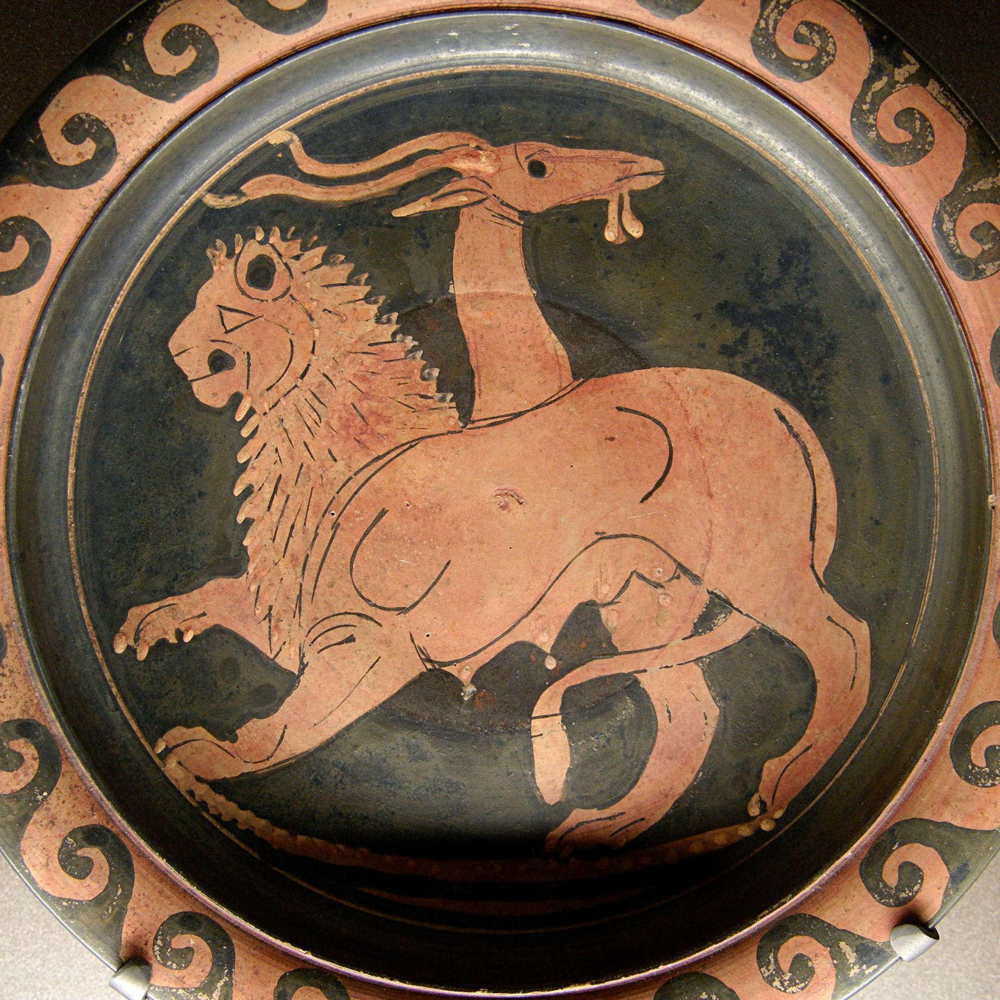
Input side:
- Write text in markdown
- Insert code using R
- Write “metadata” with YAML
- Insert equation with LaTeX
RMD is a “chimera”
Output side:
HTML
DOC
PDF
The Problem
Word
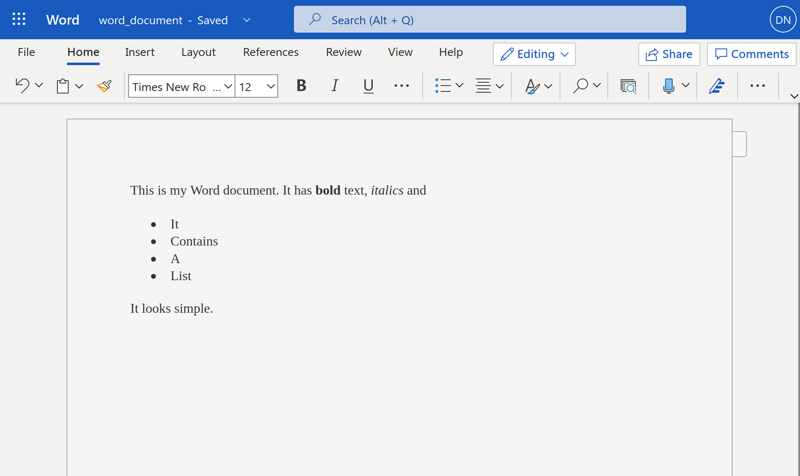Inside
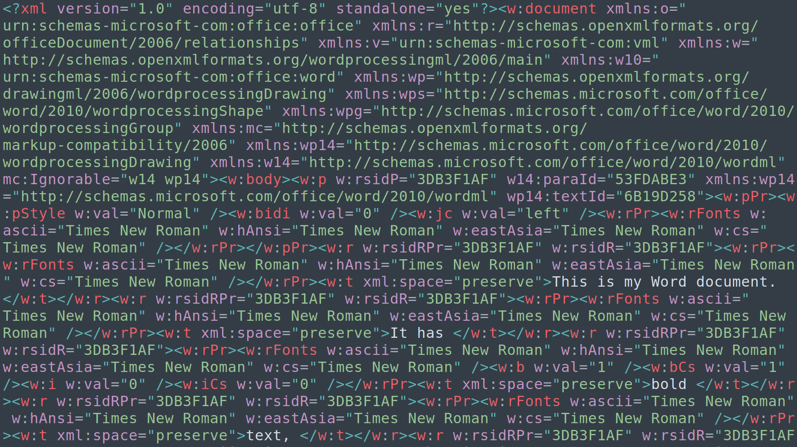Word issues
- A .docx file is a compressed folder with lots of files
- Your text is buried in with a lot of formatting information
- Not reproducible
- Code is divorced from writing
- Difficult to maintain
- Errors!
- What do I share?
- Lack of transparency
Microsoft Excel hids errors
- Francesca Gino

HTML documents are also complicated
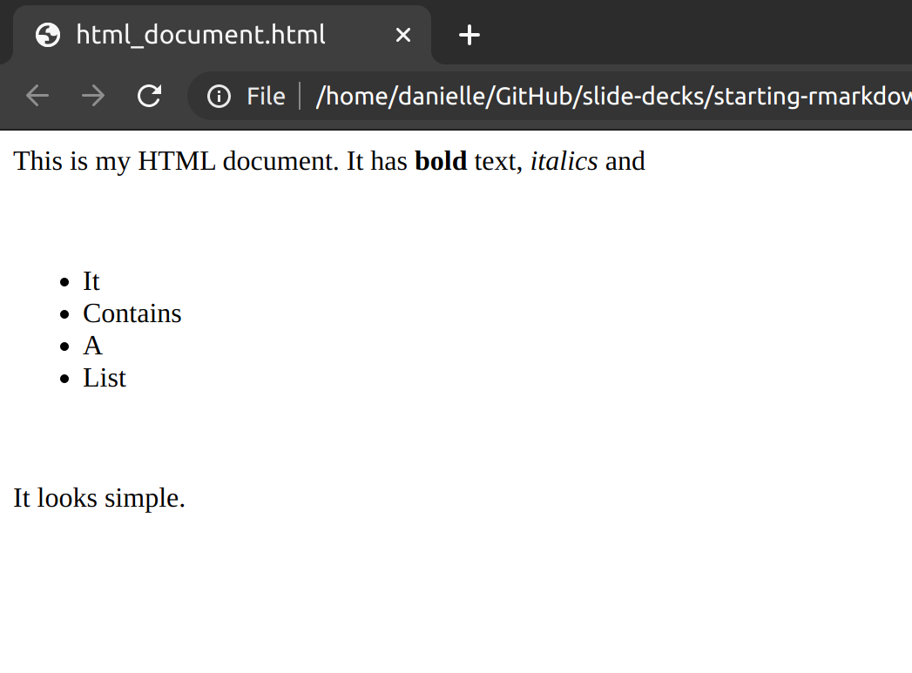
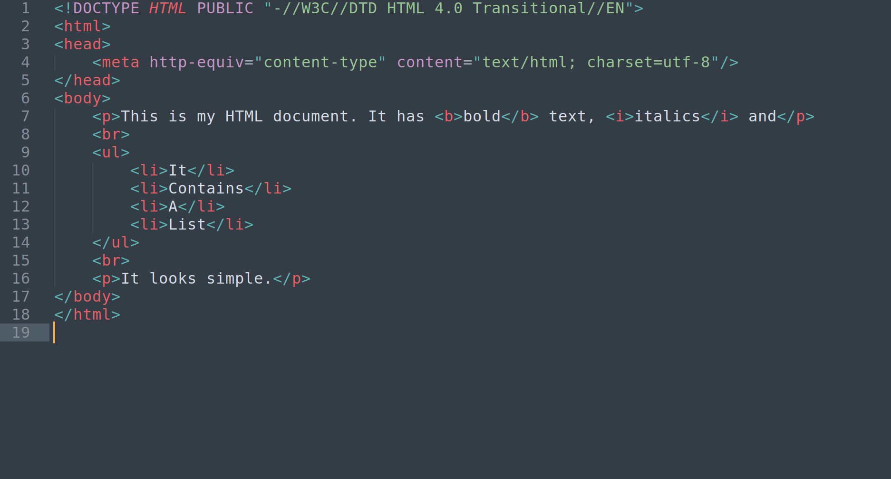
Why Markdown?
What do we want?
- Something that… you can write in plain text
- Something that… is human readable
- Something that… allows formatting
- Something that… can build to something pretty
Here’s an example of a markdown document…

Introduction
Welcome to my awesome class. You will learn all kinds of useful things about R markdown.
Okaaaaay, but this seems boring?
Let me show you where it can take you
Professional websites

Visual blogs
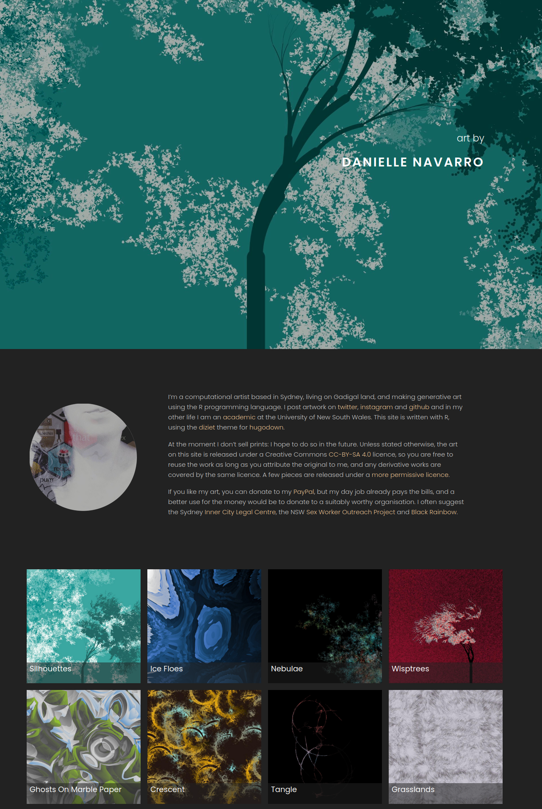
Books
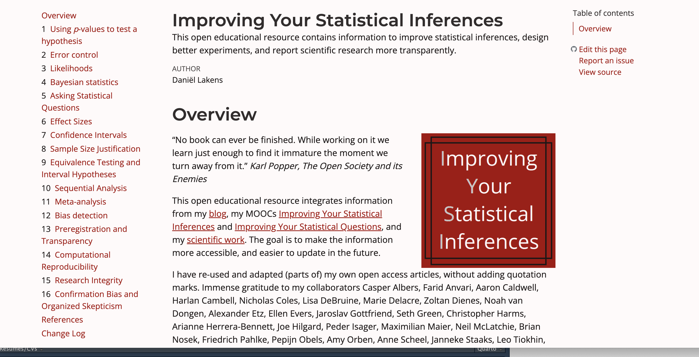Academic papers

Slide decks

Resumes/CVs
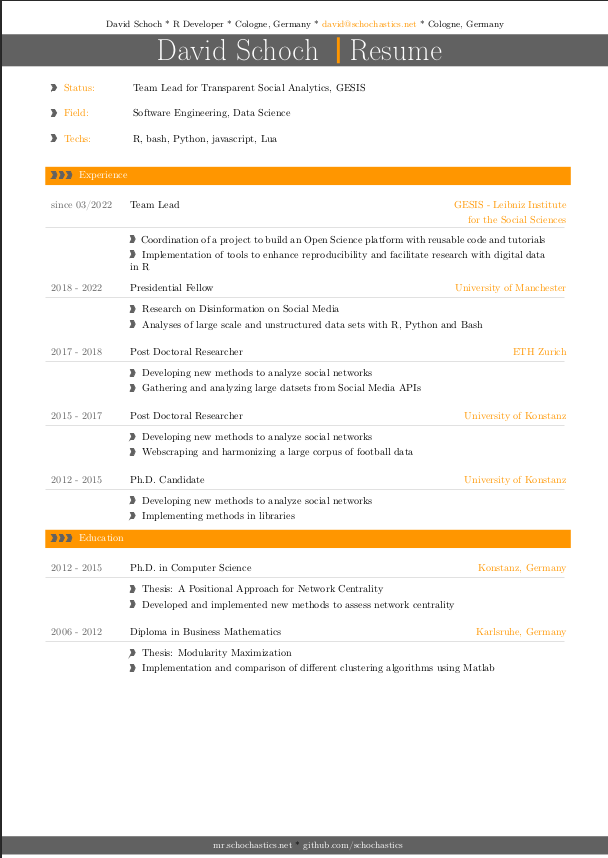Formatting
Header 1
- Using a single # gives you a really large header!
Header 2
- Using two gives you a slightly smaller header!
Header 3
…and on
Header 4
…and on
Header 5
…and on
Creating lists
You may also want to use a bulleted list!
- just
- like
- this
- one
like
this
one
Emphasis
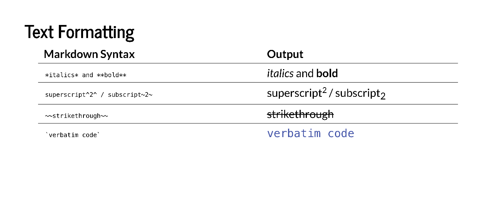Hyperlinks
<https:://placekitten.com/200/300>
[Kittens](https:://placekitten.com/200/300)
Images
Local images

![]https:://placekitten.com/200/300)
R Markdown
What do we want?
- Something that… lets you write text in markdown
- Something that… lets you include R code or Python (e.g. for data vis)
- Something that… can build to HTML, PDF, Word, etc
Live Demo
Let’s dissect the document we just wrote!
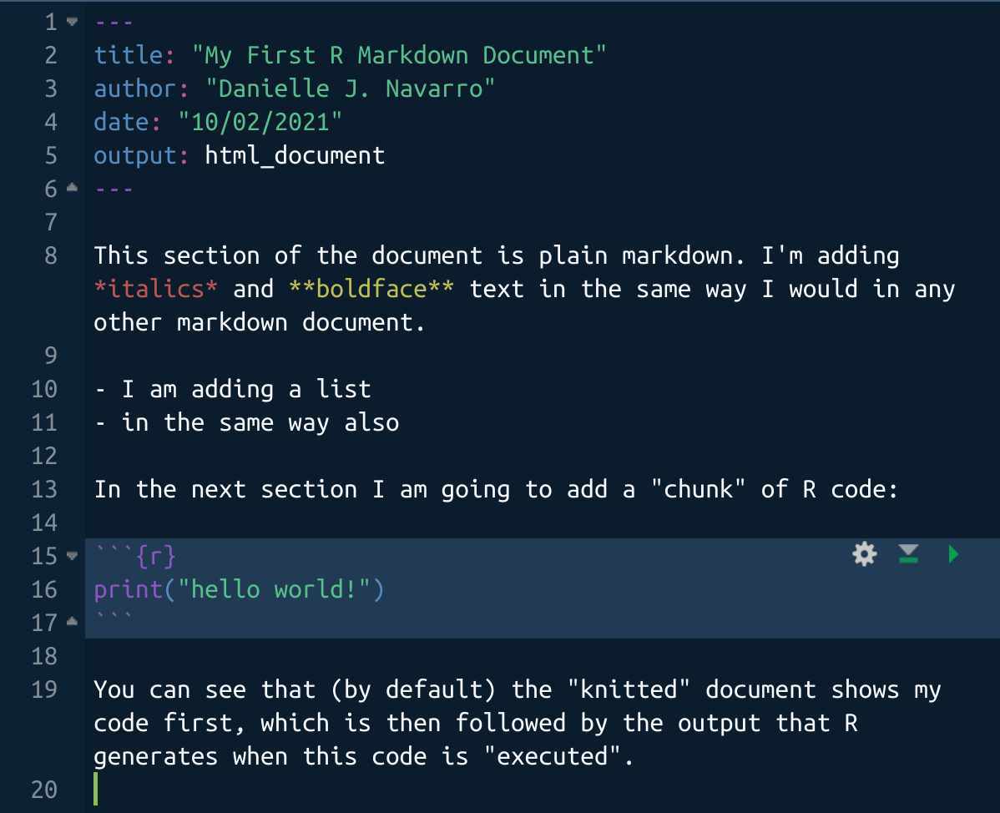
The part inside is the “YAML header”
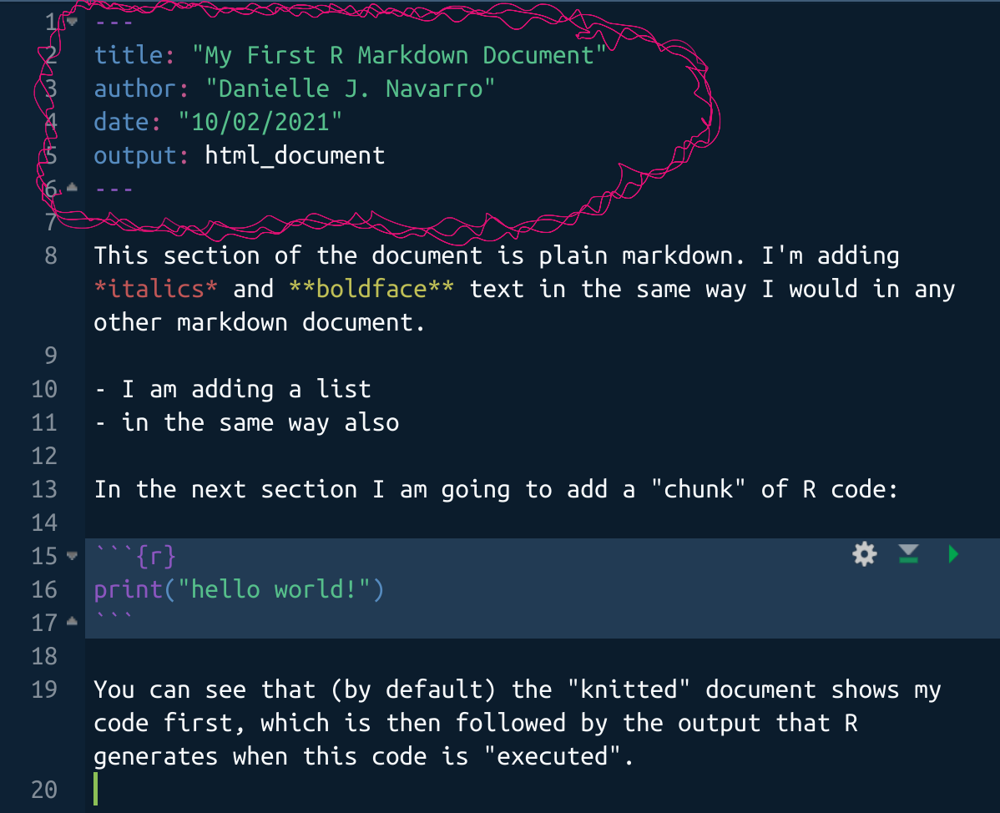
Code chunk
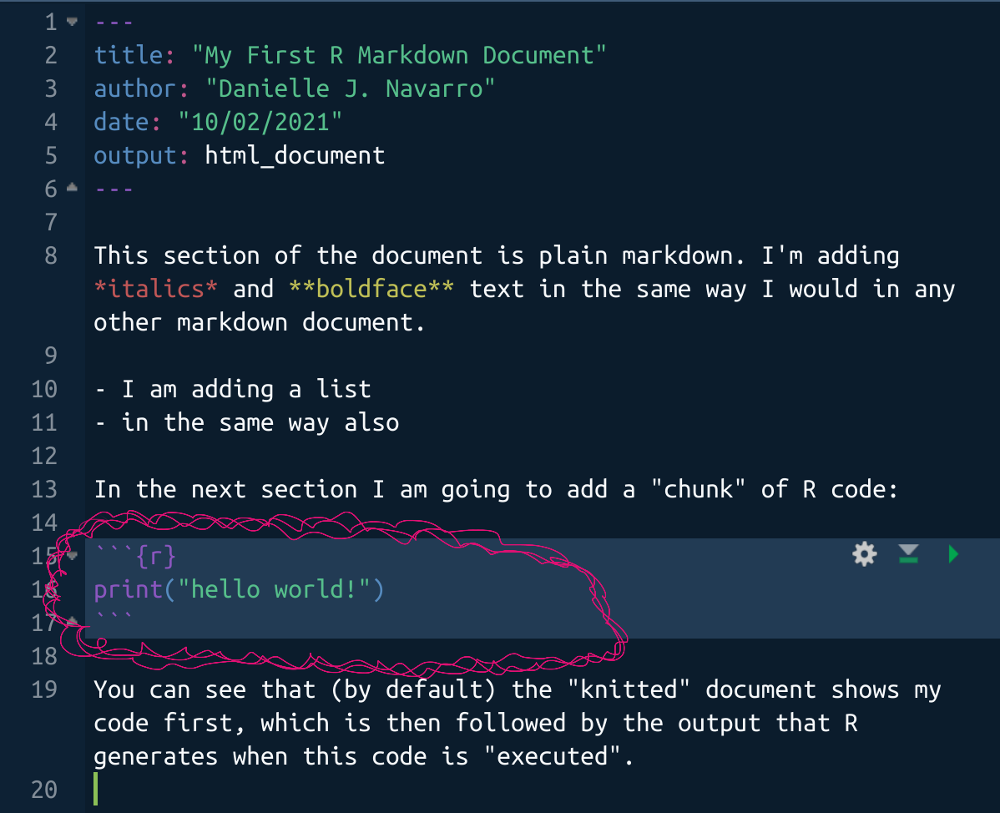
The rest is markdown
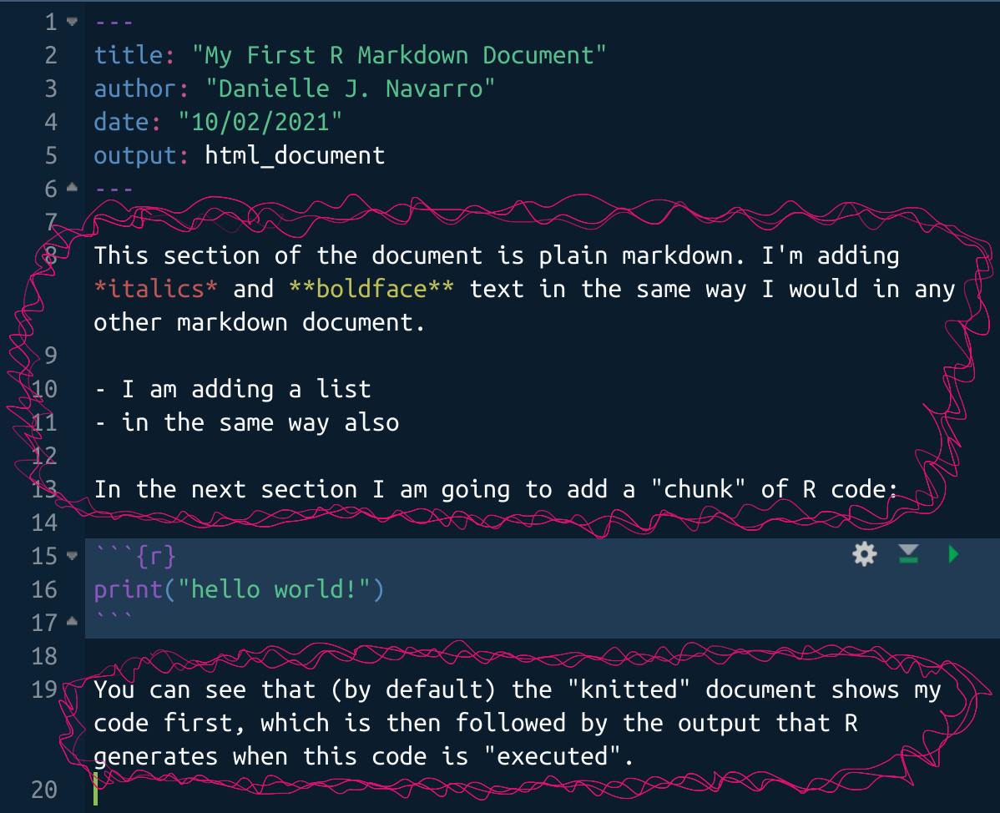
The YAML header is used for customisation
Wait… what’s the YAML acronym?
- Originally: “Yet Another Markup Language”
- Later: “YAML Ain’t Markup Language”
- … it really doesn’t matter 🙄
Output HTML only
title: "My First R Markdown Document"
author: "Jason Geller"
date: "9/15/2021"
output: html_documentOutput HTML and PDF
title: "My First R Markdown Document"
author: "Jason Geller"
date: "09/15/2023"
output:
pdf_document: default
html_document: default- Notice the indentation - YAML is very picky about this
Themes for HTML documents
output:
html_document:
theme: readablPossible themes: default, cerulean, journal, flatly, darkly, readable, spacelab, united, cosmo, lumen, paper, sandstone, simplex, yeti
Table of contents
output:
html_document:
toc: true
toc_float: true- Practice editing the YAML header
- Try creating different outputs and themes
- Try creating a floating table of contents
- Try to get it to not float!
Code chunks
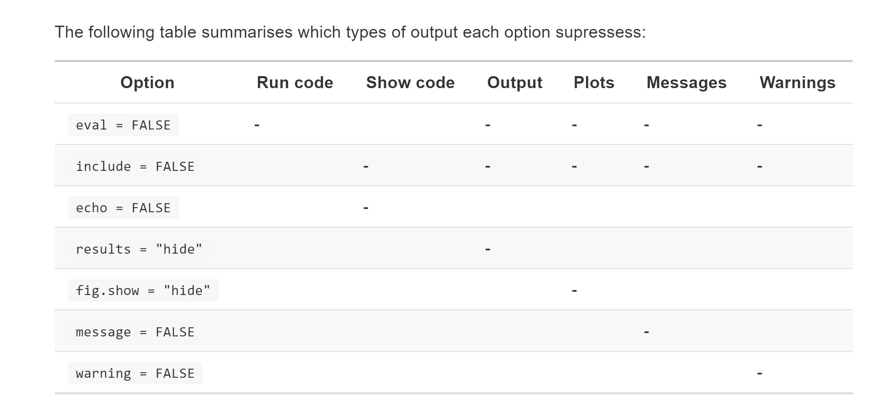Equations
An overview
- Anything inside dollar signs
$is treated as “inline” maths $$is a standalone equation- Whitespace matters:
$x$is an equation,$x $is not - Equations follow “LaTeX” rules
Equations are special
This \(x^2\) is inline
This equation is standalone \[\bar{x} = \frac{1}{n} \sum_{i=1}^{n} x_i\]
R markdown advantages
Explicitly link R code to output
Wide variety of formats
Increases transparency
Increases efficiency
Hello Quarto!
- Quarto is the next generation of RMarkdown
Big universe
- RMarkdown for EVERYONE

What is a Quarto?

Formatting
Visual editor
One fairly new feature (and one reason we’re using RStudio today!) is their new visual markdown editor. It’s basically an ultra powerful hybrid of Markdown and Microsoft Word. But be warned, it’s a little buggy if you frequently switch editing modes.
People write whole books in Markdown, and this may make that seem a little more achievable. For example, the new visual editor allows easy citation management with a Zotero library
Header 1
- Using a single # gives you a really large header!
Header 2
- Using two gives you a slightly smaller header!
Header 3
…and on
Header 4
…and on
Header 5
…and on
Lists
You may also want to use a bulleted list!
- just
- like
- this
- one
like
this
one
Emphasis
To emphasize your point you might want to use italics or bold.
To have something appear as code (using a monospace font), surround everything that is code with ticks `like this`, so that it shows up
like this.
Code Blocks
- One of the most useful things about markdown documents like this is that you can intersperse your writing with code!
For example, this R code:
Callout blocks
Call-out blocks highlight sections of text that interrupt the flow of your regular text. Maybe it’s a definition, a warning, or a sidenote
When rendering your document to HTML, callout blocks are interactive and can be collapsed and opened.
My First Callout Block!
Say things here
Callout blocks
Note
Note that there are five types of callouts, including: note, tip, warning, caution, and important.
Callout blocks
Warning
Callouts provide a simple way to attract attention, for example, to this warning.
This is important
Danger, callouts will really improve your writing.
Tip with caption
Caution, under construction
Here is something under construction
Callout markdown syntax
Expand To Learn About Collapse
This is an example of a ‘folded’ caution callout that can be expanded by the user. You can use `collapse=“true”` to collapse it by default or `collapse=“false”` to make a collapsible callout that is expanded by default.
Code chunks
{r, eval=TRUE}has been replaced with#| eval = TRUE
[1] "Don't Run Me"Tabsets
Split up and flip between sections of a page, alternative to just two columns
Cheat Sheets
- https://www.markdownguide.org/cheat-sheet/
- https://rstudio.github.io/cheatsheets/html/quarto.html
Papaja

Installing papaja
# Install latest CRAN release
#install.packages("papaja")
# Install remotes package if necessary
#if(!requireNamespace("remotes", quietly = TRUE)) install.packages("remotes")
# Install the stable development version from GitHub
#remotes::install_github("crsh/papaja")
# Install the latest development snapshot from GitHub
#emotes::install_github("crsh/papaja@devel")Open papaja

APAQUARTO
Quarto version of
PAPAJA- Still in active development
Papaja videos
Acknowledgments
- Slides partially influenced by the queen Danielle J Navarro
PSY 503: Foundations of Statistics in Psychology